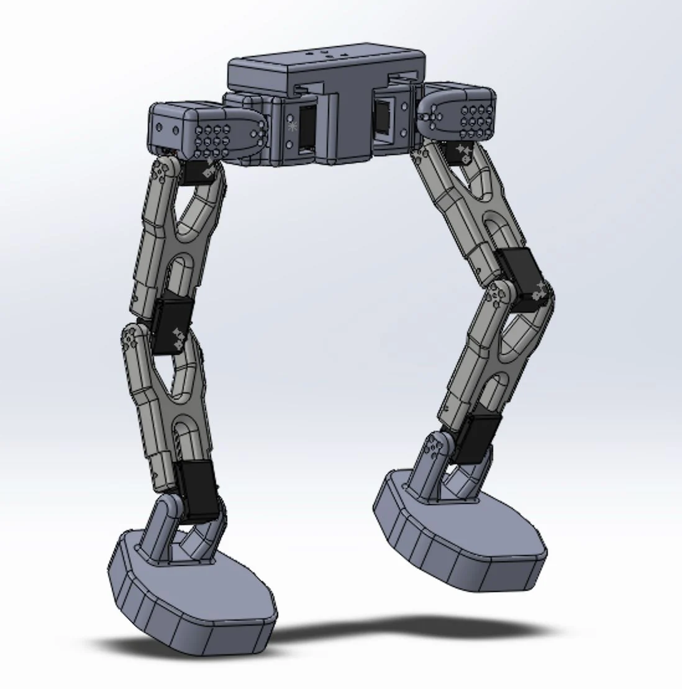
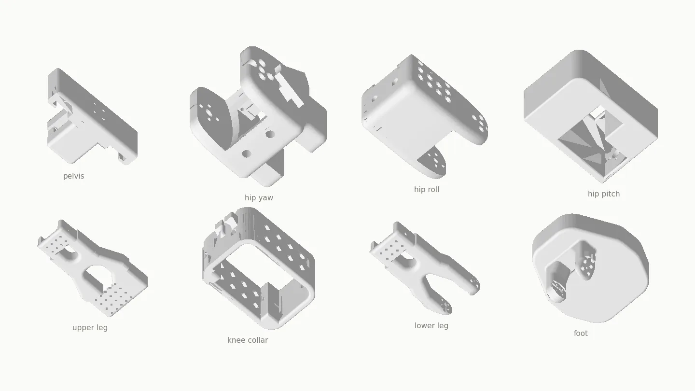

Legged robotics · Open hardware
Open-source legs for the SO-101 motor set
The SO-101 made a capable robot arm something anyone can print and build at home. There is no equivalent for a bipedal lower body, so I'm designing one around the same motors. This is a work in progress: the CAD is still changing and nothing has walked yet.

In progress
Why
The SO-101 arm has been adopted widely because it is cheap, printable and uses one motor type throughout. Legs on that model don't exist yet: open bipeds either use expensive actuators or aren't designed to be printed at home. I want a lower body that someone with an SO-101 leader/follower kit can build from the motors they already have, then use for learning bipedal control.
Constraints
- Same actuators as an SO-101 follower/leader pair, the Feetech STS3215 serial bus servo. That fixes the torque and speed budget, and the design has to live within it rather than reach for better motors.
- Fully 3D-printable structure on a consumer FDM printer. No machined parts.
- Carries the two SO-101 control boards and, optionally, a battery. It can also run tethered.
- A light printed torso to mount an IMU, with foot force sensing planned.
Where it is
Five joints per leg are designed in SolidWorks: hip yaw, hip roll and pitch in one module, knee and ankle, plus the pelvis and torso that join the two sides. The hip and pelvis parts have been printed as a single plate and the remaining parts are on their second revision. None of it is final. Once the hardware stands and holds a pose, the plan is control software, then using the platform to collect demonstration data for a learned policy, leaning on sim-to-real where it helps.
The CAD source, STLs and servo model are in the repository under CC BY-SA 4.0.
github.com/tgreen-fe/so101-legs
← All projects